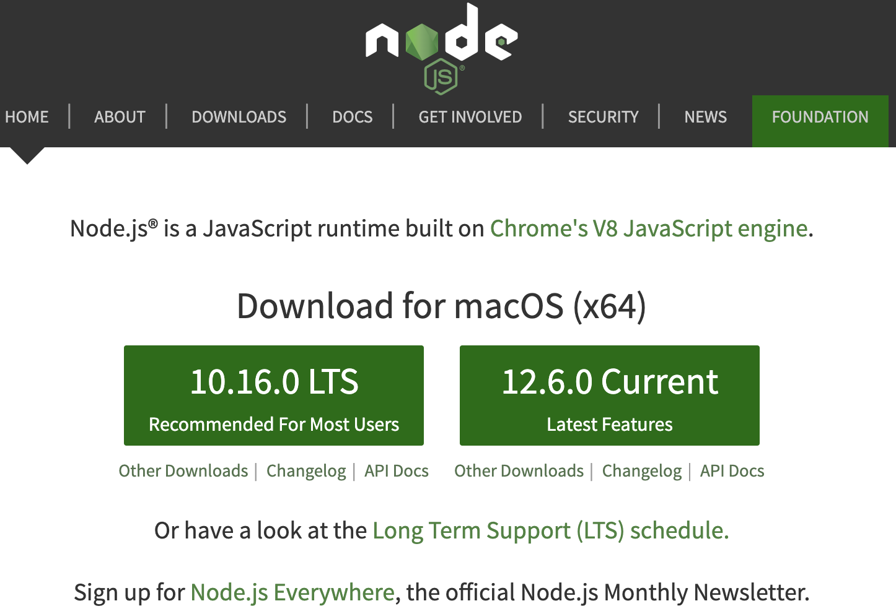

9 Node.js 基础¶
Node.js是基于Chrome JavaScript运行时建立的一个平台，实际上它是对Google Chrome V8引擎进行了封装，它主要用于创建快速的、可扩展的网络应用。Node.js采用事件驱动和非阻塞I/O模型，使其变得轻量和高效，非常适合构建运行在分布式设备的数据密集型的实时应用。
Node.js则是服务器端JavaScript的代码解析器，存在于服务器端的JavaScript代码由Node.js来解析和运行。 Node.js也是JavaScript运行的一种环境，Node.js为JavaScript提供了操作文件、创建HTTP服务、 创建TCP/UDP服务等的接口，所以Node.js可以完成其他后台语言（Python、PHP等）能完成的工作。
Node.js还通过包管理器（NPM）提供依赖项管理。通过NPM能够管理项目中所使用的第三方JavaScript库的依赖关系。掌握NPM的操作是非常重要的。通过NPM还可以将Angular代码作为模块发布供其他人使用。
可以通过“https://nodejs.org/download”下载并安装Node.js，如图9-1所示。
{kind=link}
图9-1 Node主页
您可以选择下载和安装最推荐的版本或者最新的版本。显然，前者更稳定，这就是推荐使用它的原因。
9.1 设置和运行Node.js¶
下面的命令会在项目中初始化Node.js项目。回答屏幕上提示的问题然后生成package.json文件(稍后介绍):
npm init
Note
“npm”命令用于调用Node包管理器。
一旦安装了Node.js，就可以通过命令行进入node运行环境及运行JavaScript代码。在命令行里输入“node”, 然后按Enter键运行:
$ node
> console.log('Hello World');
Hello World
使用node命令更有用的方法是输入这个命令加上文件名作为参数。这将以JavaScript的形式执行文件的内容。在下面这个例子中，我们将创建文件hello.js:
setTimeout(function() { console.log('Hello World!'); }, 2000);
现在我们可以运行它:
node hello.js
程序等待两秒钟，然后将“Hello World”写入控制台。
9.1.1 NPM包管理器¶
现在我们知道了如何通过Node运行JavaScript代码，接下来需要了解一下安装模块。你可能认为这很简单，但其实并不是， 因为许多节点模块依赖于其他节点模块来工作。所以,当你安装一个Node模块，Node需要确保任何一个节点模块的依赖包都已经安装了。NPM包管理器就是专门处理此事，它能为项目添加、更新和删除Node模块，以及管理这些相互依赖关系。
为此，Node.js提供了npm命令。这命令有许多不同的参数，允许您安装、更新或卸载模块。
网站http://docs.npmjs.com 详细地介绍了npm。
9.1.2 模块的安装模式¶
安装Node.js模块有两种模式。
Global（全局）：如果你想通过命令行使用你所安装的模块，可以在命令行里的npm install后添加 -g:
npm install -g typescript
Local（本地项目内）：如果你不想安装全局的模式，安装在本地模块中，从npm安装命令行中删除 -g
npm install express
9.1.3 npm install 命令¶
要安装Express，可以在命令行输入以下命令:
npm install express
这不会更新Node.js依赖文件package.json(稍后将详细介绍)。
如果需要将此模块作为项目依赖项保存在该文件中，请添加以下参数到命令中:
--save or --save-dev
save参数:这将在生产环境中添加您所需要安装的Node.js模块，如下所示你的package.json文件会被修改以包含此依赖项:
npm install express --save
save-dev参数: 这将仅在开发环境中（不包括生产环境）添加您所需要安装的Node.js模块，如下所示你的package.json文件会被修改以包含此依赖项:
npm install express --save-dev
9.1.4 更新依赖¶
有时依赖关系会改变。您想要添加一个额外的模块，但是添加该模块要求其他模块具有较高的版本号。节点提供了以下命令检查您的模块是否过时:
npm outdated
Node.js中有两种不同的模块更新方式。
可以使用命令npm update更新指定模块。如果您想要保存结果，还需要添加–save选项。json文件也会保存新版本的信息。如果指定了“-g”标志，则该命令将更新全局安装的包。
你可以编辑这个package.json文件，更新模块依赖，然后运行“npm update”。这将更新您的模块以匹配此文件中的规范。
如果您已经安装了Node.js，则可以通过运行以下命令来检查它的版本:
npm - v
9.1.5 卸载依赖¶
您可以执行`npm uninstall`命令卸载指定的模块。如果您想从依赖项列表中移除该模块，还需要添加–save选项。json文件会随之变化。如果指定了-g标志，则该命令将删除全局安装包。
9.2 package.json文件¶
Node.js被设计为从项目文件夹中的命令行运行。它允许开发人员可以将与其项目相关的信息存储在package.json文件中,该文件保存在项目的根文件夹中。在这个文件包含了许多与你项目有用的信息：
项目的名称和版本。
项目所依赖的Node.js模块(以及版本)。
您的项目在生产中需要哪些节点模块。
开发中的项目需要哪些节点模块(即生产不需要)。
9.2.1 更新package.json¶
您可以用以下两种方式更新这个packages.json文件：
通过使用node命令(在命令行上)安装/更新/删除节点模块并更新此文件。
你可以自己编辑这个文件。然后运行节点命令来安装/更新/删除节点模块以匹配此文件。
9.2.2 版本号¶
package.json文件允许开发人员指定项目需要的Node模块。在指定此文件中的依赖项时，还指定这些依赖项的版本号——例如，1.6.1。Node有多重方式，灵活地指定版本号， 请参考表6-3。
版本 |
描述 |
|---|---|
1.6.1 |
完全匹配版本 1.6.1 |
>1.6.1 |
高于版本 1.6.1 |
>=1.6.1 |
高于或者等于版本 1.6.1 |
<1.6.1 |
低于版本 1.6.1 |
<=1.6.1 |
低于或等于版本 1.6.1 |
～1.6.1 |
约等于版本 1.6.1，等价于 >=1.6.1 <1.(6+1).0 等价于 >=1.6.1 <1.7.0 |
^1.6.1 |
^1.6.1 等价于 >=1.6.1 <2.0.0 |
1.6.x |
匹配版本的前2位数 1.6.* |
* |
匹配任何版本 |
表6-3. 版本信息
9.2.3 node_modules文件夹¶
在安装节点模块时，将下载该模块及依赖项并将其放入项目文件夹中的node_modules文件夹中。因为安装的节点模块有许多依赖项，所以您最终会得到一个巨大的node_modules文件夹，里面有几十个模块子目录。有时npm需要很长时间来下载和安装项目节点模块。注意不要将这个文件夹从一个地方复制到另一个地方，因为这可能会导致不可知的后果。如果要将项目从一台计算机复制到另一台计算机，请删除“node_modules”文件夹，然后在目标计算机上运行“npm install”安装Node模块。
在Node.js中安装模块有两种不同的方式。你可以运行命令“npm install”指定要安装模块或者编辑package.json文件，然后运行“npm install”安装。
手动编辑package.json文件是安装多个模块时的最佳方式。首先，您必须设置一个package.json文件，其中包含应用程序的概述，位于项目的根文件夹中。
有许多可用字段，但在下面的示例package.json文件中， 你可以看到一个非常简单的例子。依赖信息描述了要安装的模块的名称和版本。在本例中，我们还将依赖Express模块:
安装package.json文件中列出的依赖项，在项目根文件夹中命令行里执行以下命令:
npm install
9.3 搭建开发服务器¶
我们在前端开发工作中，不可避免的需要搭建本地web服务器或者模拟后端RestFul服务器，下面我们介绍2种常见的服务器。
9.3.1 搭建live-server 服务器¶
live-server 是一个 Web 服务器，可以帮助前端人员搭建临时的http服务器。用它来热加载HTML/ JavaScript/CSS文件，修改本地文件后，浏览器能够立即同步，自动加载，自动刷新。相比http-server来说，live-server具备了实时刷新的功能。
1. 全局安装live-server服务器的命令格式如下：
npm install -g live-server
2. 具体使用
在web项目根目录使用命令:
live-server
执行命令后，浏览器会自动打开，并访问地址：http://localhost:8080，8080是默认端口。
修改端口号，使用如下命令:
live-server --port=9000
其他详细信息，请访问站点：http://tapiov.net/live-server/
9.3.2 搭建json-server 服务器¶
json-server 是一个 Node.js 模块，运行 Express 服务器，你可以指定一个 json 文件作为 api 的数据源。 我们使用 json-server 在本地搭建一个JSON服务器，对外提供 RestFull API 服务，前端开发工程师，在无后端的情况下，可以用它来作为后端 API 服务器。
1. 全局安装json-server服务器的命令格式如下：
npm install -g json-server
2. 具体使用
新建一个data文件夹，在data文件夹中创建一个db.json的文件:
{ "data":[] }
启动json-server，使用如下命令:
cd data json-server db.json
控制台输出启动信息:
\{^_^}/ hi! Loading db.json Done Resources http://localhost:3000/data Home http://localhost:3000上述信息表明我们的json-server 服务器已经启动成功。接下来可以通过postman及浏览器发送请求，获得相应数据。 如发送GET请求 http://localhost:3000/data
增加数据。发送POST请求 http://localhost:3000/data ，请求数据如下：
返回response 结果:
其他方法，参阅站点：https://github.com/typicode/json-server
9.4 小结¶
现在您已经知道了Node.js是什么，以及如何使用它来管理项目的第三方依赖包，上面我们介绍了如果用 “npm” 命令的用法，是时候开始使用Angular CLI(the command line interface)进行编码了。第7章我们就开始介绍它。